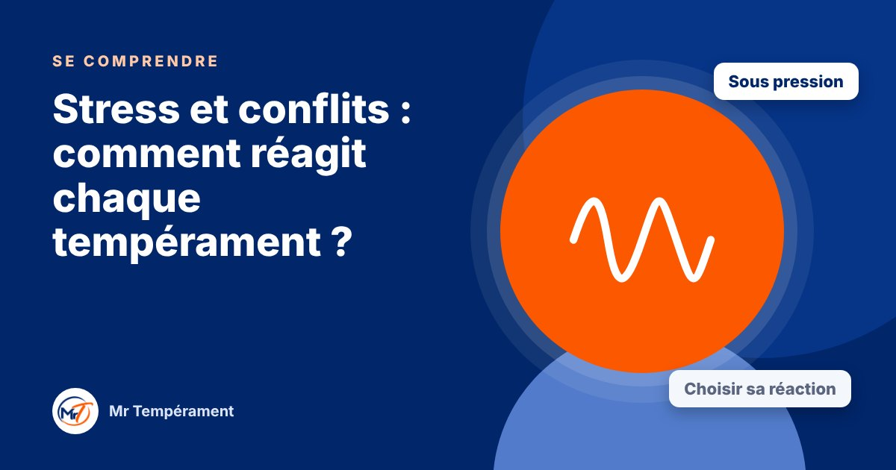

Stress et conflits : comment réagit chaque tempérament ?

Sous pression, on ne se comporte pas comme d'habitude. Reconnaître sa réaction aide à la choisir plutôt qu'à la subir.
Quand tout va bien, on est souvent à son meilleur. C'est sous pression, face à un désaccord ou à une critique, qu'on voit apparaître d'autres réflexes. Les tempéraments ne s'expriment pas de la même façon dans ces moments-là. Les connaître permet de les anticiper, chez soi comme chez les autres.
Le Dominant : il attaque ou il prend le contrôle
Sous tension, il accélère, hausse le ton, tranche. Il peut paraître agressif, alors qu'il cherche surtout à reprendre la main. Ce dont il a besoin : un peu de recul avant de répondre, et une conversation franche une fois le calme revenu. Revenir vers la personne dans la journée répare beaucoup.
L'Influent : il parle ou il contourne
Il cherche à apaiser par la parole, la blague ou le contact. Si la tension persiste, il peut s'agiter, évoquer les choses à droite et à gauche, ou éviter le sujet. Ce dont il a besoin : nommer le problème simplement, et rester sur le sujet jusqu'à une conclusion.
Le Stable : il se ferme ou il cède
Il se tait, encaisse et accepte pour préserver la paix. Le ressentiment s'installe en silence. Ce dont il a besoin : dire sa gêne tôt, en une phrase, et savoir que ce n'est pas une menace pour la relation. Les autres, de leur côté, peuvent lui poser des questions précises et lui laisser du temps.
Le Consciencieux : il se replie et il analyse
Il se retire pour réfléchir, cherche des arguments et peut devenir froid ou critique. Ce dont il a besoin : annoncer son repli (« J'ai besoin d'une heure »), puis revenir avec ce qu'il a compris. Les autres peuvent lui fournir des faits précis plutôt que des émotions brutes.
Choisir sa réaction
Savoir comment on réagit sous pression est déjà une grande avancée. On ne change pas ses réflexes du jour au lendemain, mais on peut apprendre à reconnaître le moment où ils s'enclenchent, à respirer, et à choisir une autre réponse.
Si vous traversez une période de stress très intense ou durable, n'hésitez pas à en parler à un proche ou à un professionnel : ces repères ne remplacent pas un accompagnement adapté.
Pour aller plus loin
Le Bilan DISC Miroir révèle votre style naturel et votre style adapté, votre super-pouvoir et votre point faible principal.
Découvrir le Bilan Miroir